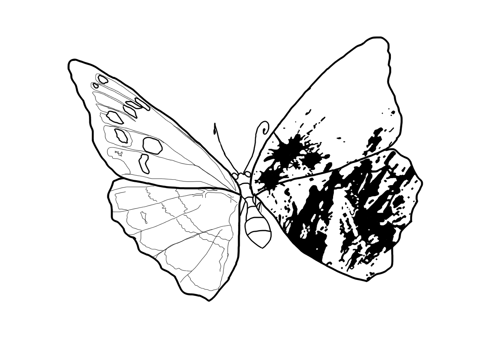

Manifest
777
Denk eens terug aan een tijd waarin mensen volledig op hun eigen gedachten en creativiteit moesten vertrouwen om iets te creëren. Een essay schrijven, een idee illustreren, een filmscène tot leven brengen of helemaal vanaf nul een advertentie ontwerpen. Elke getekende lijn, elk geschreven woord en elke vastgelegde afbeelding kostte tijd, moeite en creativiteit. Creëren draaide niet alleen om het maken van iets, maar ook om het uiten van iets. Het ging erom een gedachte, een gevoel of een droom om te zetten in iets wat de wereld kon zien.
Tegenwoordig lijkt bijna alles mogelijk met één enkele klik. AI is een ontzettend krachtig hulpmiddel geworden, dat in staat is om teksten te schrijven, ontwerpen te maken en dingen te creëren waarvoor vroeger jarenlange oefening nodig was. Maar terwijl de mogelijkheden blijven groeien, vraag ik me steeds vaker af. Kan iets dat zoveel weet werkelijk begrijpen wat het betekent om te voelen? Roept een door AI gegenereerde afbeelding hetzelfde gevoel op als een foto die je tijdens een vakantie hebt gemaakt, terwijl je op het strand ligt en de zon langzaam achter de horizon verdwijnt? Een foto die je herinnert aan de warmte op je huid, het geluid van de golven en de mensen om je heen. De foto is misschien niet perfect, maar bevat iets wat je niet met een prompt kunt imiteren: een herinnering die helemaal van jou is.
Al sinds dat ik klein ben is mijn grootste droom om dingen te creëren. Ik houd ervan om te tekenen, te ontwerpen, foto's te maken, video's te editten en momenten vast te leggen die anders met de tijd zouden verdwijnen. Voor mij is creëren altijd meer geweest dan alleen iets moois te maken. Het is een manier om mezelf uit te drukken wanneer woorden tekortschieten. Ik teken om emoties los te laten die ik niet kan uitleggen, maak foto's om momenten te bewaren die ik voor altijd zou willen vasthouden en ontwerp omdat ik ideeën een doel en een eigen leven wil geven. Elke creatie draagt een klein stukje van mezelf in zich, gevormd door mijn ervaringen en de manier waarop ik naar de wereld kijk.
Als toekomstige ontwerpers moeten we technologie integreren als een manier om onze creativiteit te ondersteunen, onze ideeën te ordenen en nieuwe mogelijkheden te ontdekken. Toch moeten we ervoor waken dat gemak niet ten koste gaat van wat ons werk betekenisvol maakt. De toekomst van design zou geen strijd tussen mensen en machines moeten zijn, maar een kans om technologie te gebruiken zonder onze creatieve identiteit te verliezen.

We moeten onthouden voor wie we creëren: mensen, met hun eigen emoties, herinneringen, angsten, hoop en verlangens. Een ontwerp kan iemands aandacht trekken, maar het is de betekenis erachter die ervoor zorgt dat iemand even stilstaat, zich erin herkent, het onthoudt en erom geeft. Trends kunnen de wereld tijdelijk in hun greep houden, maar oprechte menselijke verbinding kan blijven bestaan, lang nadat dat moment voorbij is.Mijn wens voor de toekomst van ontwerpers is dat we nooit de moed verliezen om vanuit ons hart te creëren. Ik wens een wereld waarin ontwerpers niet alleen worden gewaardeerd om hoe snel ze iets kunnen produceren, maar ook om de gedachte, gevoeligheid en intentie achter hun werk. Een samenleving die de menselijke touch waardeert: de imperfecte lijn, het onverwachte detail, het persoonlijke verhaal en de emotie die een creatie tot leven brengt.
Ik hoop dat we blijven tekenen, ook wanneer de lijnen niet perfect zijn, foto's blijven maken wanneer de belichting niet ideaal is en blijven experimenteren zonder te weten wat het resultaat zal zijn. Want soms ligt het meest betekenisvolle deel van het creëren niet in het eindresultaat, maar in de persoon die we onderweg worden. Technologie zal zich blijven ontwikkelen en machines zullen steeds meer kunnen dan we ons nu kunnen voorstellen, maar we kunnen zelf kiezen wat we willen behouden. Nieuwsgierigheid, verbeeldingskracht, empathie en de vrijheid om onszelf uit te drukken.
Mijn wens is dat we ook in een wereld waarin AI steeds meer kan, onze eigen creativiteit blijven gebruiken. Dat we blijven creëren om mensen te raken en emoties over te brengen, in plaats van alleen iets te maken dat er mooi of indrukwekkend uitziet. Want design gaat niet alleen over het maken van iets nieuws, maar ook over het vertellen van een verhaal en het overbrengen van een gevoel. Ik hoop dat we als toekomstige ontwerpers nooit vergeten hoeveel waarde onze eigen ideeën, ervaringen en emoties hebben. Want juist dat maakt ons werk persoonlijk en uniek.
Dit manifest is persoonlijk door mij geschreven. Wil je meer weten over de wetenschappelijke informatie rondom dit onderwerp? Ga dan naar de volgende pagina.